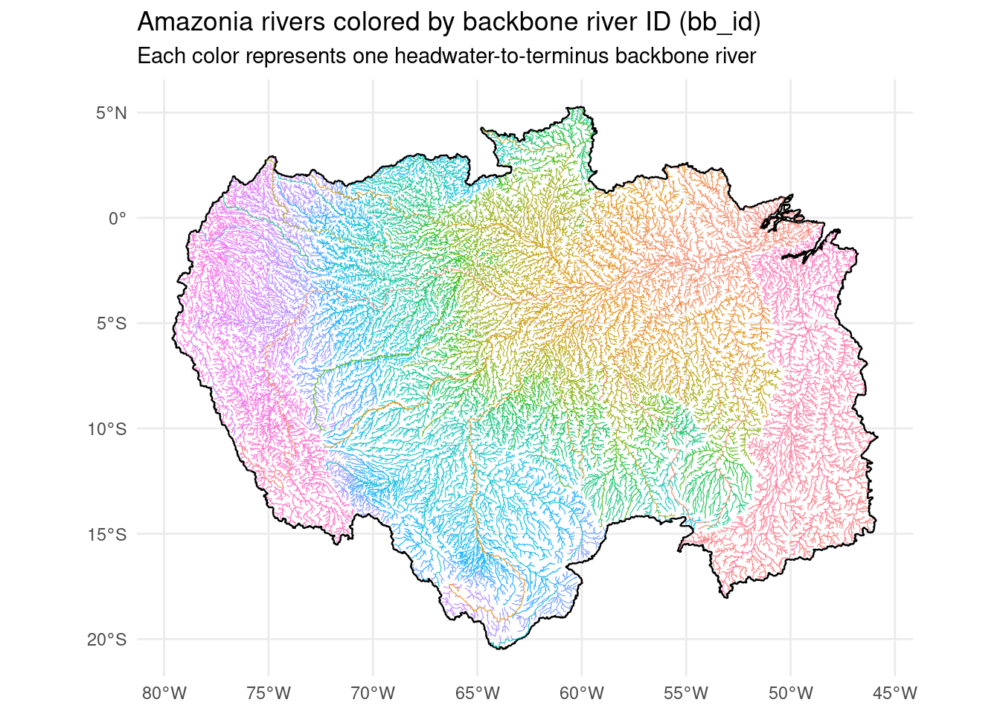
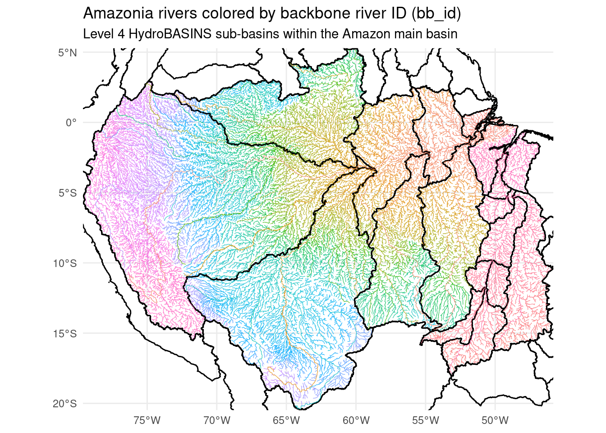
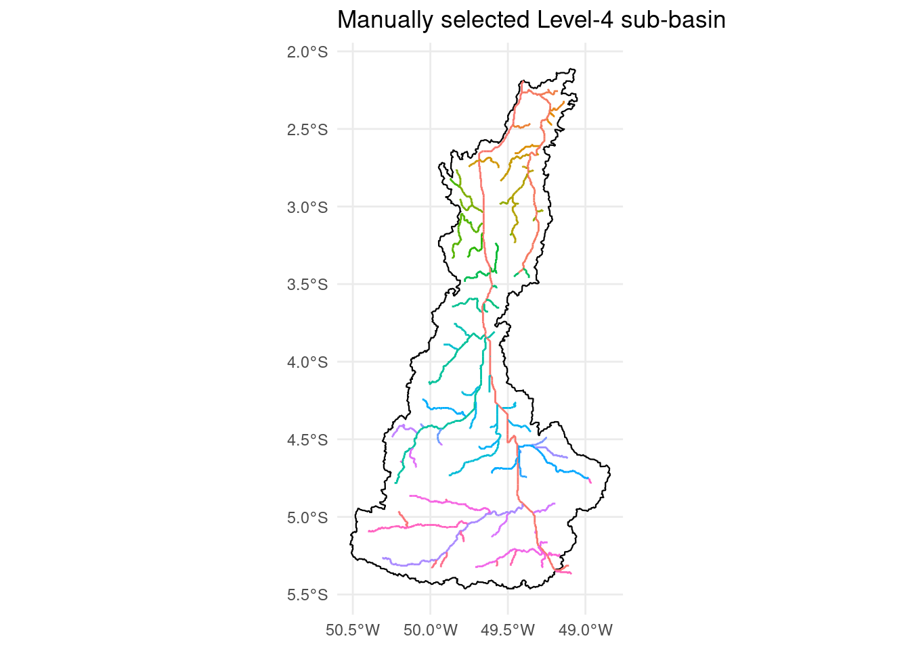
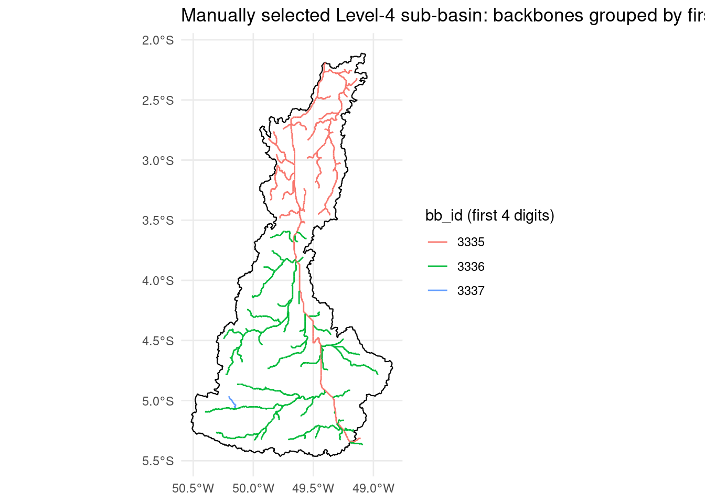
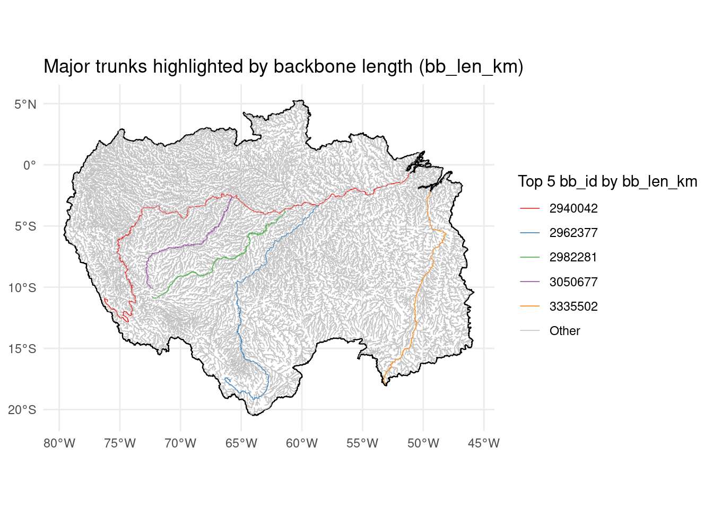

library(sf)
library(dplyr)
library(ggplot2)
library(tidyverse) trunk_id_exploration
Trunk ID Exploration in the Amazonia Basin
This document explores backbone identifications (bb_id) we have been referring to as trunk id and related attributes for the Amazonia basin using RDS objects from the amazonia_crop workflow.
A backbone (bb_id) is the single downstream path a reach belongs to, from its headwater until it hits a terminus (ocean, lake, or where it joins a bigger river).
Load Amazonia Objects
# Load Basin and Rivers
amazon_basin <- readRDS("../../../../../capstone/netzerohydro/data/cleaned_v1/amazon_basin.rds")
amazon_rivers_3up <- readRDS("../../../../../capstone/netzerohydro/data/cleaned_v1/amazon_rivers_3up.rds")
# Load South America Level 3 sub-basins
basin_sa_lev3 <- read_sf(
"../../../../../capstone/netzerohydro/data/raw/hybas_sa_lev01-12_v1c/hybas_sa_lev03_v1c.shp"
) %>%
janitor::clean_names()
# Keep Level 3 basins that intersect Amazonia
amazon_subbasins_lev3 <- basin_sa_lev3 %>%
st_make_valid() %>%
st_filter(amazon_basin, .predicate = st_intersects)
# Load South America Level 4 sub-basins
basin_sa_lev4 <- read_sf(
"../../../../../capstone/netzerohydro/data/raw/hybas_sa_lev01-12_v1c/hybas_sa_lev04_v1c.shp"
) %>%
janitor::clean_names()
# Keep Level 4 basins that intersect Amazonia
amazon_subbasins_lev4 <- basin_sa_lev4 %>%
st_make_valid() %>%
st_filter(amazon_basin, .predicate = st_intersects)Amazonia Rivers Colored by Backbone ID (bb_id)
Each backbone river is a single, contiguous flow path from a headwater to a terminus (sink), identified by bb_id. Coloring by bb_id reveals the trunk structure of the network.
# test <- amazon_rivers_3up %>%
# mutate(
# bb_id_chr = as.character(bb_id),
# bb_id_prefix = substr(bb_id_chr, 1, 2) # first 4 digits
# )
ggplot() +
geom_sf(data = amazon_basin, fill = NA, color = "black", linewidth = 0.4) +
geom_sf(data = amazon_rivers_3up,
aes(color = as.factor(bb_id)),
linewidth = 0.2, alpha = 0.9) +
guides(color = "none") + # hide legend; too many categories
theme_minimal() +
labs(
title = "Amazonia rivers colored by backbone river ID (bb_id)",
subtitle = "Each color represents one headwater-to-terminus backbone river"
)
Amazonia Rivers with Level 4 basins overlayed
bbox_amazon <- st_bbox(amazon_basin)
ggplot() +
geom_sf(data = amazon_basin, fill = NA, color = "black", linewidth = 0.4) +
geom_sf(data = amazon_subbasins_lev4, fill = NA, color = "black", linewidth = 0.5) +
geom_sf(data = amazon_rivers_3up,
aes(color = as.factor(bb_id)),
linewidth = 0.2, alpha = 0.9) +
guides(color = "none") +
coord_sf(
xlim = c(bbox_amazon["xmin"], bbox_amazon["xmax"]),
ylim = c(bbox_amazon["ymin"], bbox_amazon["ymax"]),
expand = FALSE
) +
theme_minimal() +
labs(
title = "Amazonia rivers colored by backbone river ID (bb_id)",
subtitle = "Level 4 HydroBASINS sub-basins within the Amazon main basin"
)
Get list of hybas basins with area we can choose an appropriate sized one.
amazon_subbasins_lev4 %>%
st_drop_geometry() %>%
select(
hybas_id,
sub_area = any_of("sub_area"),
up_area = any_of("up_area"),
) %>%
arrange(desc(coalesce(sub_area, up_area))) %>% # largest first
head(50)# A tibble: 44 × 3
hybas_id sub_area up_area
<dbl> <dbl> <dbl>
1 6040280410 2216665. 2216711
2 6040285990 1368850. 1368850.
3 6040814820 1159401. 1159401.
4 6040280400 714738. 714738.
5 6040239820 513292. 513314.
6 6040262220 494533. 494551.
7 6040262110 390551. 4696940
8 6040040470 326937. 326937.
9 6040345000 308335. 308345.
10 6040029280 292390. 292390.
# ℹ 34 more rowsMap a singular smaller basin to examine backbones
one_subbasin <- amazon_subbasins_lev4 %>%
filter(hybas_id == 6040007950)
rivers_one <- amazon_rivers_3up %>%
st_filter(one_subbasin, .predicate = st_intersects)
ggplot() +
geom_sf(data = one_subbasin, fill = NA, color = "black", linewidth = 0.4) +
geom_sf(data = rivers_one, aes(color = as.factor(bb_id)), linewidth = 0.5) +
guides(color = "none") +
theme_minimal() +
labs(
title = "Manually selected Level-4 sub-basin",
color = "bb_id"
)
one_subbasin <- amazon_subbasins_lev4 %>%
filter(hybas_id == 6040007950)
rivers_one <- amazon_rivers_3up %>%
st_filter(one_subbasin, .predicate = st_intersects) %>%
mutate(
bb_id_chr = as.character(bb_id),
bb_id_prefix = substr(bb_id_chr, 1, 4) # first 4 digits
)
ggplot() +
geom_sf(data = one_subbasin, fill = NA, color = "black", linewidth = 0.4) +
geom_sf(
data = rivers_one,
aes(color = as.factor(bb_id_prefix)),
linewidth = 0.5
) +
theme_minimal() +
labs(
title = "Manually selected Level-4 sub-basin: backbones grouped by first 4 digits of bb_id",
color = "bb_id (first 4 digits)"
)
Amazon_rivers_3up has one row per river reach (segment). Many reaches share the same bb_id because they belong to the same backbone/trunk. bb_summary collapses those many reach rows into one row per bb_id, so you can rank/plot “major trunks” without duplicating backbone attributes across thousands of reaches.
bb_summary <- amazon_rivers_3up %>%
st_drop_geometry() %>% # drop geometry so summarise is faster (attributes only)
group_by(bb_id) %>% # group all reaches that share the same backbone ID
summarise(
bb_name = first(bb_name), # backbone name (same for all reaches in this bb_id)
bb_len_km = first(bb_len_km),# total backbone length (precomputed backbone attribute)
bb_dis_ord = first(bb_dis_ord),# discharge-based order for the backbone (precomputed)
bb_vol_tcm = first(bb_vol_tcm),# total backbone volume (precomputed)
.groups = "drop" # return an ungrouped data frame
)
top_n <- 5Largest Rivers by length (could switch to volume)
top_bb_len <- bb_summary %>%
arrange(desc(bb_len_km)) %>%
slice_head(n = top_n) %>%
pull(bb_id)
rivers_len <- amazon_rivers_3up %>%
mutate(trunk_group = ifelse(bb_id %in% top_bb_len, as.character(bb_id), "Other"))
ggplot() +
geom_sf(data = amazon_basin, fill = NA, color = "black", linewidth = 0.4) +
geom_sf(data = rivers_len, aes(color = trunk_group), linewidth = 0.3, alpha = 0.95) +
scale_color_manual(
values = c(setNames(rep("grey75", 1), "Other"),
setNames(RColorBrewer::brewer.pal(top_n, "Set1"), as.character(top_bb_len))),
name = paste0("Top ", top_n, " bb_id by bb_len_km")
) +
theme_minimal() +
labs(title = "Major trunks highlighted by backbone length (bb_len_km)")
Backbone Attributes: Definitions (from HydroROUT / HydroATLAS)
For each backbone (bb_id), HydroROUT / HydroATLAS provides:
bb_id: Backbone River Identifier. Represents the contiguous river unit (flow path from source/headwater to sink/terminus).bb_name: Backbone river name.bb_len_km: Backbone river length. Sum oflength_kmacross all reaches belonging to the samebb_id.bb_dis_ord: Backbone river discharge order. River order (riv_ord) of the most downstream reach of that backbone (discharge-based order).bb_vol_tcm: Backbone river volume. Sum ofvolume_tcmacross all reaches in the backbone.bb_ocean: Ocean connectivity flag. Equals 1 if the backbone is directly connected to the ocean (its terminus drains to the ocean), 0 otherwise.
At the reach level we also have:
riv_ord: River order (based on long-term average discharge). Larger values typically indicate more downstream, higher-discharge reaches.
Takeaways
bb_idpartitions the Amazonia river network into coherent trunk units (from headwaters to termini).bb_len_kmandbb_vol_tcmindicate the physical scale of each backbone; longest and largest-volume trunks correspond to major rivers.bb_oceandistinguishes backbones that ultimately drain to the ocean from those that terminate internally (e.g., in lakes or endorheic areas).bb_dis_ordsummarizes each backbone’s importance in terms of downstream discharge, complementing reach-levelriv_ord.
These backbone attributes are useful for:
- Restricting cascade definitions to dams on the same trunk (
bb_id). - Prioritizing major trunks (high
bb_dis_ord,bb_len_km,bb_vol_tcm) for conservation or impact assessment.